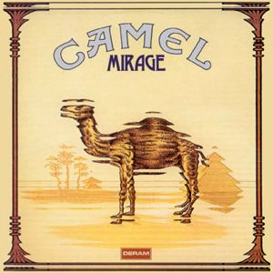

Mirage is the second studio album by the English progressive rock band Camel, released on 1 March 1974.[1] It features songs such as "The White Rider", "Lady Fantasy", and "Supertwister" which includes a showcase for Andrew Latimer's flute.
There are five tracks on Mirage, two over 9 minutes. Those two are multi-part songs: "Lady Fantasy" and "Nimrodel/The Procession/The White Rider", the latter being about The Lord of the Rings. The album was released on Gama Records/Deram Records. Mick Rock shot the inner sleeve photo.
Creation
Gama Records was looking for an outlet for their projects and quickly signed a long-term deal with Decca/London branch label, Deram Records. The first fruits of this collaboration was Mirage. For this first installment, the Gama Records label makes a production effort well above that of the first album with MCA. The first step was to have a weight producer like David Hitchcock (Genesis, Caravan), and half a dozen sound engineers including John Burns, Bill Price or Howard Kilgour and distributed between Island Studios, Decca Studios and the Air Studios.
Critical reception
There was no promo single, nor did it chart in the UK, but the general media response to the finished record was very promising. The prestigious Sounds magazine was one of the first to praise the work and Andy Ward and Doug Ferguson were described as a well-oiled machine. Even further was The Beat Magazine that declared Mirage "Album of the Month", and finally came the surprise when the record entered the Billboard Top 200 at number 149 and remained visible for no less than 13 weeks. Today, Mirage is considered one of the essential Progressive Rock albums of all time, occupying position 21 on the list of the 50 Essential Progressive Rock Albums by Rolling Stone magazine.
In a Sputnikmusic album review, critic Matthijs van der Lee declared Mirage as Camel's "magnum opus". The album was voted no. 51 in the Top 100 Prog albums of All Time by readers of Prog magazine in 2014.
Prog Sphere considered Mirage to be the band's best album, writing that it is a prog classic that should be owned by anyone that is a fan of progressive rock.
Release details
- 1974, U.S., Janus Records
- 1974, UK, Deram Records SML 1107, Release Date 1 March 1974, LP
- 2002, UK, London 8829292, Release Date 3 June 2002, CD (remastered edition)
- 2023, Deram Records, Release Date 20 October 2023, Digital (2023 Remastered & Expanded Edition)
Mirage
Studio album by Camel
Released
1 March 1974
Recorded
November 1973
Studio
Island Studios, London
Decca Studios, London
AIR Studios, London
Genre
Progressive Rock
Length
37:58
38:08 (2023 Remix)
Label
Deram
Gama
Janus
Producer
David Hitchcock
Camel chronology
Camel
(1973)
Mirage
(1974)
The Snow Goose
(1975)
| Review scores | |
|---|---|
| Source | Rating |
| Allmusic | |
| Sputnikmusic | |